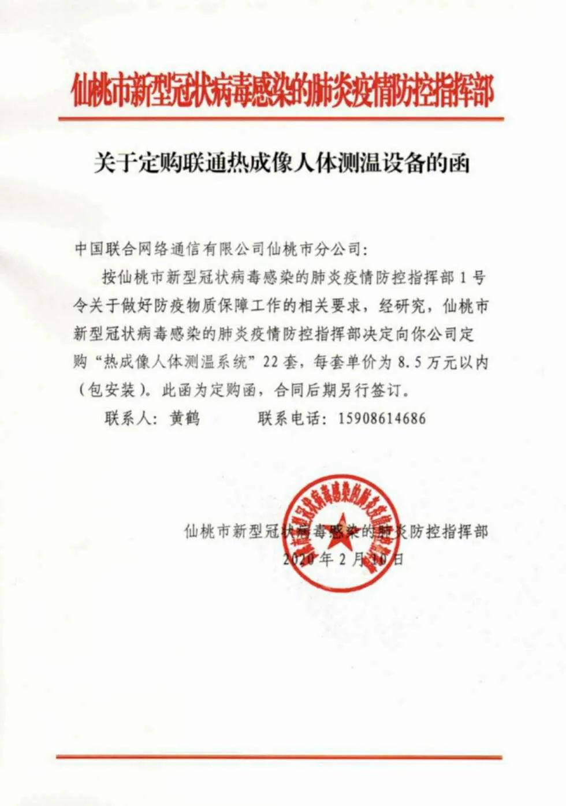

抗“疫”之下，企业复工如何安全破局？
原文链接 备份链接 暂停过后，安全重启 “按照年前的计划，1月31日开工以后这批订单马上就出货了。现在不仅老订单推迟交付，其他业务也基本暂停了。”某机床零配件加工厂的老板林浩坦言，疫情对厂子最大的影响就是产能和物流，随之而来的就是日渐吃 …
澎湃新闻记者 邓雅菲 实习生 陈紫嘉
针对网传“仙桃100人以上企业均要安装红外线测温仪”一事，仙桃市新型冠状病毒感染的肺炎防控指挥部综合协调组具体负责人周冰峰2月22日回复澎湃新闻（www.thepaper.cn）称，网上传的《关于定购联通热成像人体测温设备的函》内容属实，但仙桃市并未强制要求100人以上的企业安装统一采购的红外线测温仪，只是向人数超过100人的复工企业推荐采购红外线测温仪，由复工企业自愿采购红外线测温仪或采取其它安全的解决方案。
此前，一则“紧急通知”当天在网络流传，该通知称，“接仙桃市指挥部紧急通知，凡是100人以上的企业，无论当前复工与否，均要安装红外线测温仪，由市统一采购，价格9万左右”。

一则“紧急通知”在网络流传。
与此通知相关的，则是周冰峰提到内容属实的函件《关于定购联通热成像人体测温设备的函》。这份函件此前也在网络流传，显示为仙桃市新型冠状病毒感染的肺炎防控指挥部发布。这份函件提到，“仙桃市新型冠状病毒感染的肺炎防控指挥部决定向你公司订购‘热成像人体测温系统’22套，每套单价为8.5万元以内（包安装）。”

一则仙桃市新型冠状病毒感染的肺炎防控指挥部《关于定购联通热成像人体测温设备的函》在网络流传。
“通知下传出现失误，是推荐而非强制企业采购”
“我们从来没有强制要求企业采购红外线测温仪，可能是在我们企业生产组在向乡镇发通知后，乡镇联系企业时传达信息有误。了解到这个情况后，我已向市委常委、统战部部长和企业生产组负责人报告了这一情况，并安排了专人向企业做解释工作。”周冰峰说。
周冰峰进一步解释说，作为全国的防护物资生产基地，仙桃市每天必须完成4.5万套防护服的生产量，目前有相当多的企业面临着复工复产，所以向人数超过100人的复工企业推荐采购红外线测温仪，由复工企业自愿采购红外线测温仪或采取其它安全的解决方案。
“此外，由于红外线测温仪属于市场上紧缺的资源，需要提前定货，所以仙桃市政府才考虑代为收集企业需求信息，统计后，交由联通、电信、移动等3家运营商提前订购，并抓紧安装，利用高科技设备确保企业安全生产。”周冰峰说。
仙桃市目前对复工的企业有明确的要求，必须要有专班负责抓、有防护应急物资、有分时段防护记录、有人车出入检测记载、有复工前消毒措施、有员工健康体检报告。
“基于安全防护措施的考量，政府才向企业推荐了红外线测温仪。如果企业使用其他满足条件的设备，不管是红外线测温仪，还是手持体温枪，只要能确保企业安全生产，我们都是允许复工的。”周冰峰说。
“采购红外线测温仪有难度，很难短时间抢到货”
据周冰峰介绍，2月8日，仙桃市新型冠状病毒感染的肺炎防控指挥部综合协调组曾向湖北省各地市州咨询，得知大部分地市州都向中国联通定购过红外线测温仪，全省价格均为8.5万元。
周冰峰说，订购函提到的22套红外线测温仪，其中21套由政府出资采购，1套由仙桃市某重点物资保障商超采购。政府采购的21套设备中有10套运用于仙桃市重点定点医院，11套用于保障全省医用防护服生产的11家定点企业和配套企业。由于测温仪器紧缺，截至2月22日，仍有两套未到货。
“我们现在采购红外线测温仪都有难度，即使是电信、联通、移动三家运营商加起来，都很难短时间抢购到货。”周冰峰说。
戳这里进入
“全国新型冠状病毒感染病例实时地图”↓↓↓
本期编辑 周玉华
推荐阅读


原文链接 备份链接 暂停过后，安全重启 “按照年前的计划，1月31日开工以后这批订单马上就出货了。现在不仅老订单推迟交付，其他业务也基本暂停了。”某机床零配件加工厂的老板林浩坦言，疫情对厂子最大的影响就是产能和物流，随之而来的就是日渐吃 …
原文链接 备份链接 人员返岗难、道路不畅通、现金流紧绷，中小物流企业需要更多的支持和帮助，这不仅事关物流业全面复工复产，也关系到民生和社会稳定 文 |《财经》记者 王静仪 编辑 | 施智梁 快递员王为这几天已经忙昏了头，他所在的上海市浦 …
原文链接 备份链接 图片来源：Pexels 记者：方卓然 “ 世界500强投资的企业复工率已接近90%。跨国公司地区总部的复工率已达到93%，外资研发中心复工率达到了87%。 ” 2月22日下午，上海市商务委副主任刘敏对外表示，根据市外商 …
原文链接 [备份链接]() *************▲*************2020年2月18日，呼和浩特一家公司的员工正在赶制口罩。 （新华社/图） 全文共5770字，阅读大约需要8分钟。 虽然是在生产口罩，杨洋自己家里的口罩还 …
原文链接 备份链接 以下文章来源于我是南七道 ，作者南七道 疫情，让老蔡这样的小微型企业措手不及。而开工之路，更是遥不可及 *******文｜ 南七道******* 广东随处可见的小工厂（南七道2019年摄） 受疫情影响，最近包括 …